| js01.html | คำอธิบาย |
|---|---|
| 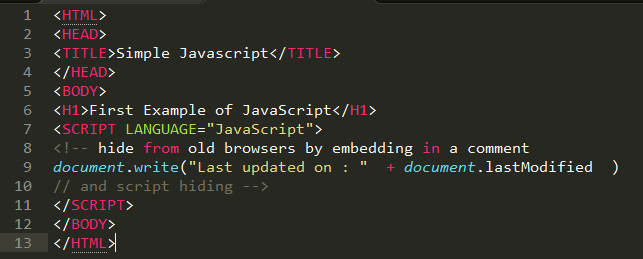 | 7.เปิดการใช้งาน Script 8.comment 9.ใช้คำสั่ง document.write เป็นการสั่งให้แสดงออกทางหน้าจอว่า Last updated on และแสดงค่าวันและเวลาที่แก้ไขล่าสุดโดยใช้คำสั่ง document.lastModified 10.comment |
| 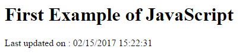 | |
| js02.html | คำอธิบาย |
|---|---|
| 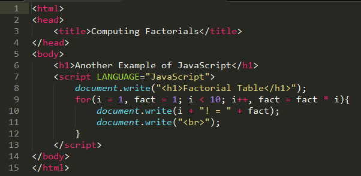 | 8.แสดงข้อความ Factorial Table ออกทางหน้าจอ 9.ทำซ้ำ 9 รอบ และกำหนดค่าของ fact = fact * i 10.ให้แสดงออกทางหน้าจอเป็น i ! และค่าของ fact 11.ขึ้นบรรทัดใหมโดยให้คำสั่งให้พิมพ์ br เป็นการขึ้นบรรทัดใหม่ทำอย่างนี้ไปเรื่อย ๆ จนออกจาก for |
| 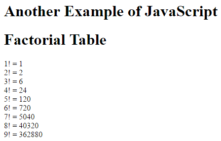 | |
| js03.html | คำอธิบาย |
|---|---|
| 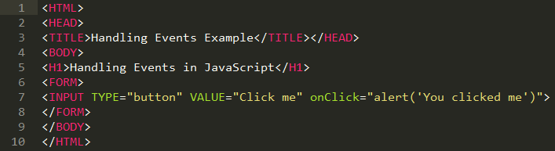 | 7.สร้างปุ่มแสดงข้อความบนปุ่มว่า Click me เมื่อคลิกจะแสดงหน้าต่าง Pop up แสดงข้อความว่า You clicked me |
| 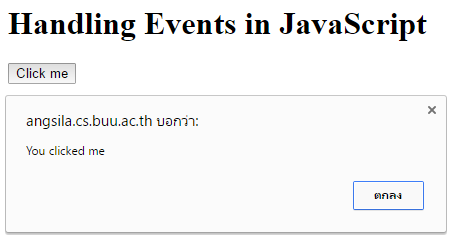 | |
| js04.html | คำอธิบาย |
|---|---|
| 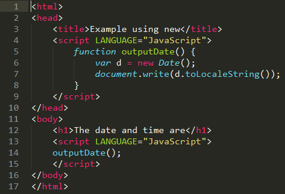 | 5.ประกาศฟังก์ชัน outputDate 6.สร้าง object ของ Date ในตัวแปร d 7.พิมพ์ค่าของตัวแปร d ที่เปลี่ยนจากวันเวลาให้อยู่ในรูปของสตริง 14.เรียกใช้ฟังก์ชัน outputDate |
| 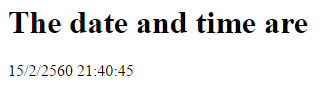 | |
| js05.html | คำอธิบาย |
|---|---|
| 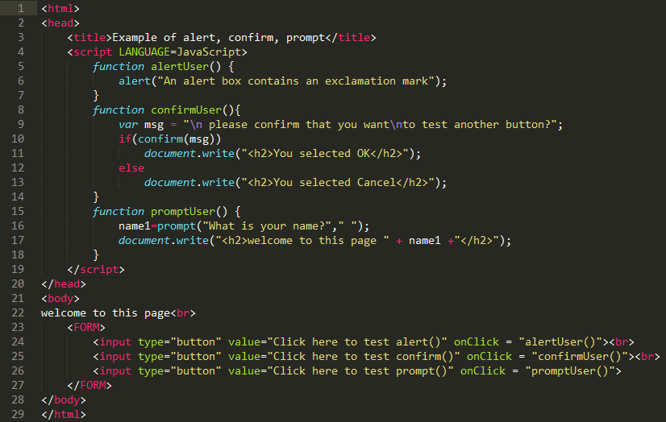 | 5. สร้างฟังก์ชัน alertUser 6. แสดง Pop up และแสดงข้อความว่า An alert box contains an exclamation mark 8. สร้างฟังก์ชัน confirmUser 9. ประกาศตัวแปรเก็บสตริง ชื่อว่า msg แล้วแสดงข้อความ please confirm that you want to test another button? 10. เงื่อนไข ถ้ายืนยัน msg 11.ให้พิมพ์สตริง <h2> selected OK</h2>12. ถ้าไม่ใช่ 13. ให้พิมพ์สตริง <h2> selected Cancel
</h2>15. สร้างฟังก์ชัน promptUser 16. ให้ตัวแปร name1 เก็บคำตอบจาก Pop up ที่แสดงว่า What is your name? 17. พิมพ์สตริง <h2>welcome to this page รวมกับค่าตัวแปร
name1 ที่กรอก และต่อด้วย </h2>24.สร้างปุ่ม alert และเรียกใช้ฟังก์ชัน alertUser 25.สร้างปุ่ม confirm และเรียกใช้ฟังก์ชัน confirmUser ถ้า ok จะแสดงค่าว่า You Seleted OK ถ้า cancel จะแสดงค่าว่า You Seleted cancel 26.สร้างปุ่ม prompt และเรียกใช้ฟังก์ชัน promptUser จะมีกล่องพืมพ์ข้อความ เมื่อกรอกข้อความไปแล้ว จะแสดง welcome to page ตามด้วยคำที่กรอกไป |
| 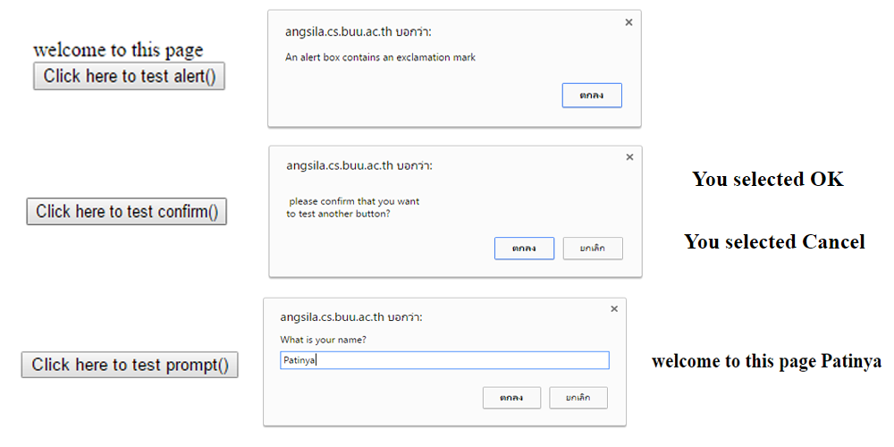 | |
| js06.html | คำอธิบาย |
|---|---|
| 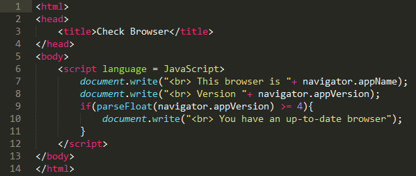 | 7. พิมพ์สตริง <br> This browser is ตามด้วยชื่อ Browser ที่ใช้8. พิมพ์สตริง <br> Version ตามด้วยเวอร์ชันของ Browser9. เช็คเงื่อนไขว่าถ้าเมื่อแปลงเวอร์ชันของ Browser เป็นทศนิยมแล้วมีค่ามากกว่าหรือเท่ากับ 4 หรือไม่ 10. ถ้าใช่ให้พิมสตริง <br>แล้วแสดงข้อความ You have an up-to-date browser |
| 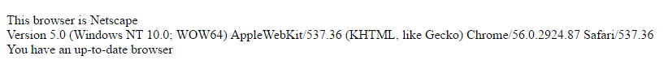 | |
| js07.html | คำอธิบาย |
|---|---|
| 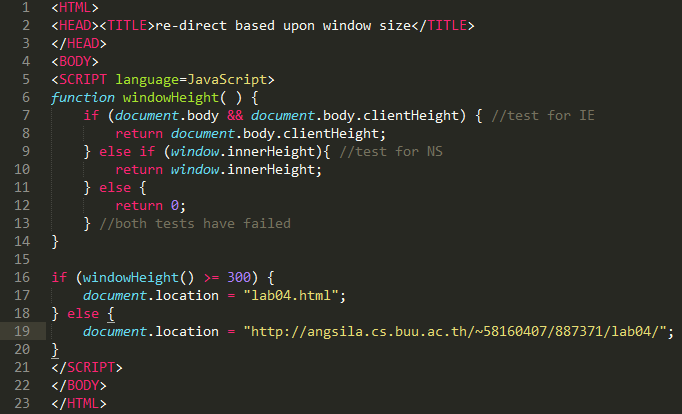 | 6. สร้างฟังก์ชัน windowHeight 7. ตรวจสอบว่าเป็น Browser หรือไม่ 11: ถ้าใช่ให้คืนค่าความสูงหน้าจอกลับมา 9. ถ้าไม่ใช่ Browser แล้วให้ตรวจสอบว่าเป็น Browser Netscape หรือไม่ 10. ถ้าใช่ให้คืนค่าความสูงหน้าจอกลับมา 11. ถ้าไม่ใช่ Browser Netscap 12. ให้คืนค่า 0 กลับมา 16. ตรวจสอบว่าความสูงหน้าจอมากกว่าหรือเท่ากับ 300 หรือไม่ 17. ถ้าใช่ให้ลิ้งค์ไปหน้า lab04.html 18. ถ้าไม่ใช่ 19. ให้ลิ้งค์ไปหน้า http://angsila.cs.buu.ac.th/~58160407/887371/lab04 |
| 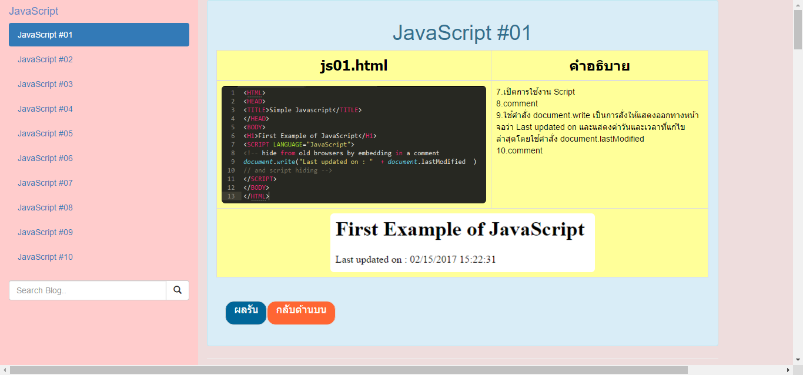 | |
| js08.html | คำอธิบาย |
|---|---|
| 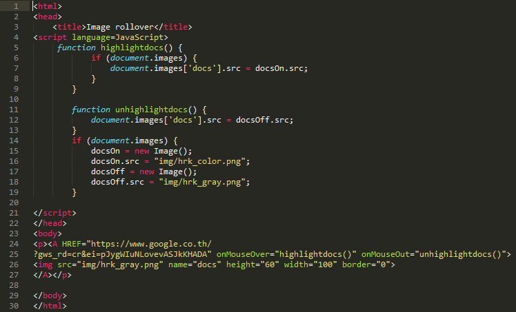 | 5. สร้างฟังก์ชัน highlightdocs 6. ตรวจสอบ รูปภาพ 7. ให้รูปภาพที่มีชื่อ docs อยู่ที่ docsOn.src 11. สร้างฟังก์ชัน unhighlightdocs 12. ให้รูปภาพ ที่มีชื่อ docs อยู่ที่ docsOff.src 14. ตรวจสอบ รูปภาพ 15.สร้าง docsOn ให้เป็น Object ของ Image 16. ให้ docsOn.src แสดงภาพ img/hrk_color.png 17. สร้าง docsOff ให้เป็น Object ของ Image 18. ให้ docsOff.src แสดงภาพ img/hrk_gray.png 24.ทำให้รูปภาพ link ไปยัง www.google.com และ onMouseClick ให้มีรูปภาพขณะที่ cursor ชี้ไปยังรูปภาพนั้น และ onMouseOut ให้มีรูปภาพอีกภาพขณะที่ไม่มี cursor ชี้อยู่ 26. ใช้ภาพ img/hrk_gray.png เป็นรูปตั้งต้น ให้มีขนาด height=60 width=100 |
| |
|
| js09.html | คำอธิบาย |
|---|---|
| 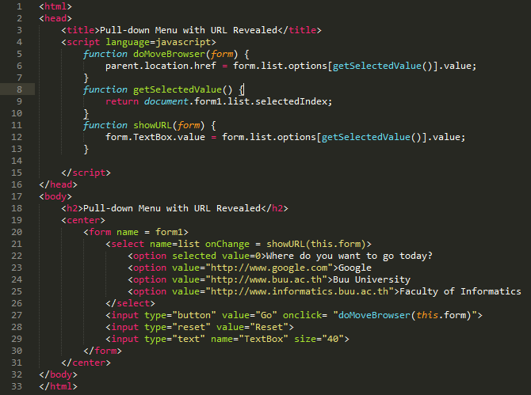 | 5. ประกาศฟังก์ชัน doMoveBrowser(form) รับ form เข้ามา 6. รับค่าลิ้งค์เว็บไซต์จากฟังก์ชัน getSelectedValue เพื่อที่จะลิ้งค์ไปยังเว็บไซต์นั้น 8. ประกาศฟังก์ชัน getSelectedValue 9. คืนค่าเว็บไซต์กลับไป 11. ประกาศฟังก์ชัน showURL(form) โดยรับ form เข้ามา 12. รับค่าลิ้งค์เว็บไซต์จากฟังก์ชัน getSelectedValue มาเก็บไว้ใน Text box 20. ประกาศการใช้งาน Form 21. สร้างseletedชึ้นมาเพื่อระบุชนิดของ Form 22-25. สร้างdropdownเพื่อใช้เลือกว่าเราจะเข้า website ใหน? 27-29. สร้างกล่องเพื่อแสดง URL ของแต่ละขื่อใน dropdown |
| 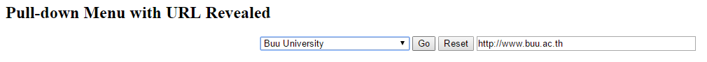 | |
| js10.html | คำอธิบาย |
|---|---|
| 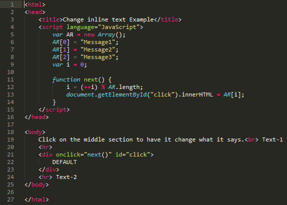 | 5. สร้าง Object ชื่อ AR ในรูปแบบของ Array 6. ให้ AR[ตำแหน่งที่ 0] เก็บสตริง Message 1 7. ให้ AR[ตำแหน่งที่ 1] เก็บสตริง Message 2 8. ให้ AR[ตำแหน่งที่ 2] เก็บสตริง Message 3 9. ประกาศตัวแปร i = 0 11. สร้างฟังก์ชัน next 12. ให้ i เก็บค่า i ที่เพิ่มค่าขึ้น 1 แล้ว หารเอาเศษกับความยาวของ Array ที่ชื่อ AR 13. นำข้อมูลใน Array มาใส่แทรกลงไปตามตำแหน่ง i ที่เพิ่มขึ้น โดย id=click (คลิก 1 ครั้ง เปลี่ยนสตริง 1 ครั้ง) |
| 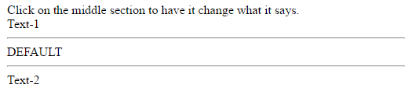 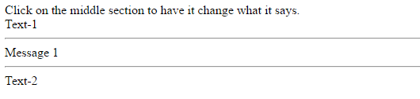 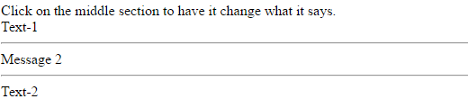 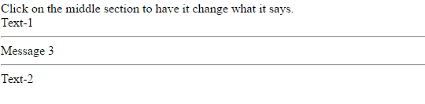 |
|